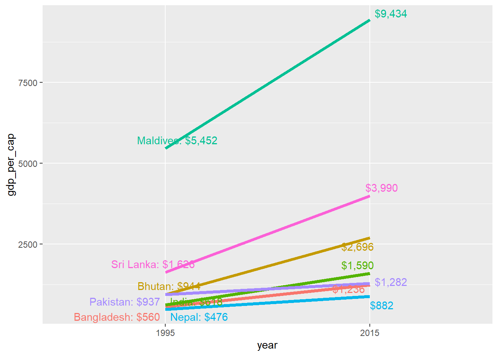

pacman::p_load("tidyverse", # ggplot, dplyr, etc
"WDI", # World Bank data access
"geofacet", # facets shaped as maps
"scales", # helpful scale functions like dollar()
"ggrepel", # non-overlapping labels
"ggbump") # bump chartssession_08_examples
We download the data from the World Bank’s Open Data portal.
indicators <- c("SP.DYN.LE00.IN", # Life expectancy
"EG.ELC.ACCS.ZS", # Access to electricity
"EN.ATM.CO2E.PC", # CO2 emissions
"NY.GDP.PCAP.KD") # GDP per capita
wdi_raw <- WDI(country = "all",
indicators,
extra = TRUE,
start = 1995,
end = 2020)
head(wdi_raw)It is time consuming to download the data everytime, you knit the document (additionally, the World Bank’s servers are sometimes temporarily down preventing you to get the data). Therefore, it is better to save the data as CSV file and use this file from then on.
Export wdi_raw to CSV:
write_csv(wdi_raw, "wdi_raw.csv")Reproducibility is important. Therefore, we still want to keep the code to get the World Bank data without running it. By setting eval=FALSE in the chunk options, we can inlcude the code without running it.
For example:
indicators <- c("SP.DYN.LE00.IN", # Life expectancy
"EG.ELC.ACCS.ZS", # Access to electricity
"EN.ATM.CO2E.PC", # CO2 emissions
"NY.GDP.PCAP.KD") # GDP per capita
wdi_raw <- WDI(country = "all", indicators, extra = TRUE,
start = 1995, end = 2020)
write_csv(wdi_raw, "wdi_raw.csv")Then, we load our CSV file. By adding include=FALSE the code is run, but not shown in our output.
Data cleaning: - filtering rows that are not single countries - rename World Bank indices to meaningful words.
wdi_clean <- wdi_raw %>%
filter(region != "Aggregates") %>%
select(iso2c, country, year,
life_expectancy = SP.DYN.LE00.IN,
access_to_electricity = EG.ELC.ACCS.ZS,
co2_emissions = EN.ATM.CO2E.PC,
gdp_per_cap = NY.GDP.PCAP.KD,
region, income)
head(wdi_clean)# A tibble: 6 × 9
iso2c country year life_expectancy access_to_electricity co2_emissions
<chr> <chr> <dbl> <dbl> <dbl> <dbl>
1 AF Afghanistan 2000 55.3 4.45 0.0552
2 AF Afghanistan 2016 63.1 97.7 0.268
3 AF Afghanistan 2001 55.8 9.29 0.0553
4 AF Afghanistan 2007 59.1 38.4 0.110
5 AF Afghanistan 2003 57.3 19.0 0.0730
6 AF Afghanistan 2009 60.4 48.3 0.240
# ℹ 3 more variables: gdp_per_cap <dbl>, region <chr>, income <chr>Small multiples
We start with some small multiples plots showing life expectancy over time for selected countries. - choose random countries - filter the data accordingly - plot life expectancy and facet by country
life_expectancy_small <- wdi_clean %>%
filter(country %in% c("Argentina", "Bolivia", "Brazil",
"Belize", "Canada", "Chile"))
ggplot(data = life_expectancy_small,
aes(x = year, y = life_expectancy)) +
geom_line(size = 1) +
facet_wrap(vars(country))Warning: Using `size` aesthetic for lines was deprecated in ggplot2 3.4.0.
ℹ Please use `linewidth` instead.Same, but mor minimalistic:
ggplot(data = life_expectancy_small,
mapping = aes(x = year, y = life_expectancy)) +
geom_line(size = 1) +
facet_wrap(vars(country), scales = "free_y") +
theme_void() +
theme(strip.text = element_text(face = "bold"))Filter countries according to their region:
life_expectancy_mena <- wdi_clean %>%
filter(region == "Middle East & North Africa")
ggplot(data = life_expectancy_mena,
mapping = aes(x = year, y = life_expectancy)) +
geom_line(size = 1) +
facet_wrap(vars(country), scales = "free_y", nrow = 5) +
theme_void() +
theme(strip.text = element_text(face = "bold"))Use the geofacet package to arrange facets by geography:
life_expectancy_eu <- wdi_clean %>%
filter(region == "Europe & Central Asia" | country == "Malta") %>%
mutate(country = replace(country, country == "Slovak Republic", "Slovakia"))
ggplot(life_expectancy_eu, aes(x = year, y = life_expectancy)) +
geom_line(size = 1) +
facet_geo(vars(country), grid = "eu_grid1", scales = "free_y") +
labs(x = NULL, y = NULL, title = "Life expectancy from 1995–2015",
caption = "Source: The World Bank (SP.DYN.LE00.IN)") +
theme_minimal() +
theme(strip.text = element_text(face = "bold"),
plot.title = element_text(face = "bold"),
axis.text.x = element_text(angle = 45, hjust = 1)) Warning: Using `as.character()` on a quosure is deprecated as of rlang 0.3.0. Please use
`as_label()` or `as_name()` instead.
This warning is displayed once every 8 hours.Some values in the specified facet_geo column 'country' do not match
the 'name' column of the specified grid and will be removed: Albania,
Andorra, Armenia, Azerbaijan, Belarus, Bosnia and Herzegovina,
Channel Islands, Faroe Islands, Georgia, Gibraltar, Greenland,
Iceland, Isle of Man, Kazakhstan, Kosovo, Kyrgyz Republic,
Liechtenstein, Moldova, Monaco, Montenegro, North Macedonia, Norway,
Russian Federation, San Marino, Serbia, Switzerland, Tajikistan,
Turkiye, Turkmenistan, Ukraine, UzbekistanSparklines
Sparklines are just really small line charts (or bar charts).
india_co2 <- wdi_clean %>%
filter(country == "India")
plot_india <- ggplot(india_co2, aes(x = year, y = co2_emissions)) +
geom_line() +
theme_void()
plot_indiaggsave("india_co2.png", plot_india, width = 0.5, height = 0.1, units = "in")china_co2 <- wdi_clean %>%
filter(country == "China")
plot_china <- ggplot(china_co2, aes(x = year, y = co2_emissions)) +
geom_line() +
theme_void()
plot_chinaggsave("china_co2.png", plot_china, width = 0.5, height = 0.1, units = "in")Both India  and China have seen increased CO2 emissions over the past 20 years.
and China have seen increased CO2 emissions over the past 20 years.
Slopegraphs
Slopegraph are useful to show changes between two time periods (i.e., GDP per capita). - First, filter the data to include only start and end years (i.e., 1995 and 2015). - Drop countries with missing data for these two points in time to make sure we use complete data) - add special columns for labels: The paste0() function concatenates strings and variables together: THis way, paste0(“2 + 2 =”, 2 + 2) would give us the output “2 + 2 = 4”.
gdp_south_asia <- wdi_clean %>%
filter(region == "South Asia") %>%
filter(year %in% c(1995, 2015)) %>%
# Look at each country individually
group_by(country) %>%
# Remove the country if any of its gdp_per_cap values are missing
filter(!any(is.na(gdp_per_cap))) %>%
ungroup() %>%
# Make year a factor
mutate(year = factor(year)) %>%
# Add special columns for labels
# If the year is 1995, format it like "Country name: $GDP". If the year is
# 2015, format it like "$GDP"
mutate(label_first = ifelse(year == 1995, paste0(country, ": ", dollar(round(gdp_per_cap))), NA),
label_last = ifelse(year == 2015, dollar(round(gdp_per_cap, 0)), NA))Now, we can plot the data by mapping - year to the x-axis, - GDP per capita to the y-axis, - and coloring by country. - To make the lines go across the two categorical labels in the x-axis (since we made year a factor/category), we need to also specify the group aesthetic.
ggplot(gdp_south_asia, aes(x = year, y = gdp_per_cap, group = country, color = country)) +
geom_line(size = 1.5)We can definitely see different slopes, but with 7 different colors, it’s hard to see exactly which country is which. Instead, we can directly label each of these lines with geom_text():
ggplot(gdp_south_asia, aes(x = year, y = gdp_per_cap, group = country, color = country)) +
geom_line(size = 1.5) +
geom_text(aes(label = country)) +
guides(color = "none")The country labels are difficult to see, and we could include more information, like the actual values. Therefore, we use our added columns:
ggplot(gdp_south_asia, aes(x = year, y = gdp_per_cap, group = country, color = country)) +
geom_line(size = 1.5) +
geom_text(aes(label = label_first)) +
geom_text(aes(label = label_last)) +
guides(color = "none")Warning: Removed 7 rows containing missing values (`geom_text()`).
Removed 7 rows containing missing values (`geom_text()`).The labels are still not easy to read as they are overlapping.We can make the labels repel away from each other and randomly position in a way that makes them not overlap using the ggrepel package: geom_text_repel()
ggplot(gdp_south_asia, aes(x = year, y = gdp_per_cap, group = country, color = country)) +
geom_line(size = 1.5) +
geom_text_repel(aes(label = label_first)) +
geom_text_repel(aes(label = label_last)) +
guides(color = "none")Warning: Removed 7 rows containing missing values (`geom_text_repel()`).
Removed 7 rows containing missing values (`geom_text_repel()`).
We can force the labels to only move up and down by setting the direction = “y” argument, and we can move all the labels to the left or right with the nudge_x argument. The seed argument makes sure that the random label placement is the same every time we run this (you can use any number you want).
ggplot(gdp_south_asia, aes(x = year, y = gdp_per_cap, group = country, color = country)) +
geom_line(size = 1.5) +
geom_text_repel(aes(label = label_first), direction = "y", nudge_x = -1, seed = 1234) +
geom_text_repel(aes(label = label_last), direction = "y", nudge_x = 1, seed = 1234) +
guides(color = "none")Warning: Removed 7 rows containing missing values (`geom_text_repel()`).
Removed 7 rows containing missing values (`geom_text_repel()`).Finally, take the theme off completely and change the colors:
ggplot(gdp_south_asia, aes(x = year, y = gdp_per_cap, group = country, color = country)) +
geom_line(size = 1.5) +
geom_text_repel(aes(label = label_first), direction = "y", nudge_x = -0.5, seed = 1234) +
geom_text_repel(aes(label = label_last), direction = "y", nudge_x = 0.3, seed = 1234) +
guides(color = "none") +
scale_color_viridis_d(option = "magma", end = 0.9) +
theme_void()Warning: Removed 7 rows containing missing values (`geom_text_repel()`).
Removed 7 rows containing missing values (`geom_text_repel()`).Bump charts
Bump charts show us changes in rankings over time. Here, we examine \(CO_2\) emissions in South Asia. - First we calculate a new variable that shows the rank of each country within each year - To do so, we group by year and then use the rank() function to rank countries by the co2_emissions column. By adding the “-” in front of the co2_emissionsvariable, we order from highest to lowest.
sa_co2 <- wdi_clean %>%
filter(region == "South Asia") %>%
filter(year >= 2005, year < 2015) %>%
group_by(year) %>%
mutate(rank = rank(-co2_emissions))We then plot the data using lines (geom_line()) and points (geom_point()). Additionally, we reverse the y-axis so 1 is at the top.
ggplot(sa_co2, aes(x = year, y = rank, color = country)) +
geom_line() +
geom_point() +
scale_y_reverse(breaks = 1:8)As with the slopegraph, we have many different colors in our legend. Instead of lining them up with the respective plot lines, we use geom_text() again. We don’t need to repel anything, since the text should fit in each row. However, we need to change the data argument in geom_text() and filter the data to only include one year, otherwise we would get labels on every point in the plot By adjusting the theme and colors, we can give the plot a cleaner look.
ggplot(sa_co2, aes(x = year, y = rank, color = country)) +
geom_line(size = 2) +
geom_point(size = 4) +
geom_text(data = filter(sa_co2, year == 2005),
aes(label = iso2c, x = 2004.25),
fontface = "bold") +
geom_text(data = filter(sa_co2, year == 2014),
aes(label = iso2c, x = 2014.75),
fontface = "bold") +
guides(color = "none") +
scale_y_reverse(breaks = 1:8) +
scale_x_continuous(breaks = 2005:2014) +
scale_color_viridis_d(option = "magma", begin = 0.2, end = 0.9) +
labs(x = NULL, y = "Rank") +
theme_minimal() +
theme(panel.grid.major.y = element_blank(),
panel.grid.minor.y = element_blank(),
panel.grid.minor.x = element_blank())We could even use flags instead of country codes. This requires the ggflags package and a little more work. YOu can find a detailled example here: https://dominikkoch.github.io/Bump-Chart/
We can to the same using the ggbump package: https://github.com/davidsjoberg/ggbump.
ggplot(sa_co2, aes(x = year, y = rank, color = country)) +
# we can also just use the geom_bump function!
geom_bump() +
# we reverse the y-axis that the highest emissions are on top
scale_y_reverse()